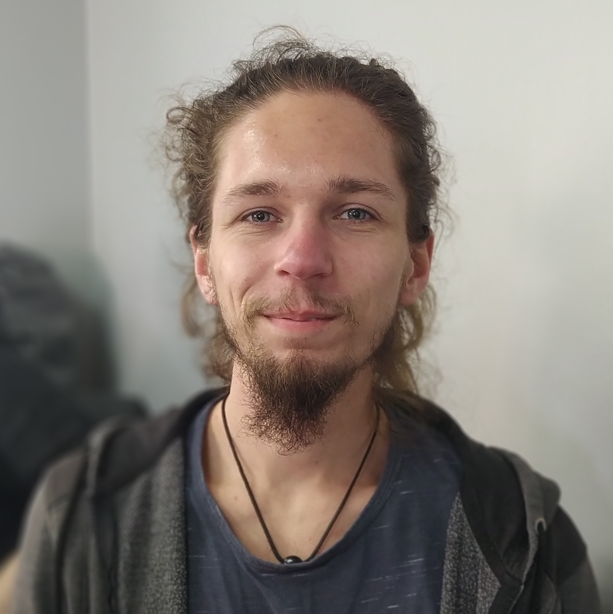

Bodart Florian
Je débute dans le domaine du numérique avec une première expérience en nuserie numérique. Je suis en formation en tant que DWWM chez SIMPLON pour établir une base solide sur différents langages.
Je débute dans le domaine du numérique avec une première expérience en nuserie numérique. Je suis en formation en tant que DWWM chez SIMPLON pour établir une base solide sur différents langages.


Agrément accompagnement piscine. Gestion et organisation des cours, d’un groupe d’enfant.
Dans un centre pour les jeunes et les foyers de charité. Aller à la rencontre des autres, les écouter, les aider
Pratique qui consiste à être logé et nourrit en échange de travail dans une ferme biologique. Le but : voyager, échanger et partager avec les locaux. Gestion d’une petite ferme, des semis, des récoltes et de la vente. Travail de la terre ( permaculture) et des bêtes.
Formation accélérée sur 9 mois à Simplon. Formé sur plusieurs langages en développement web avec une forte préférence pour les technologies JS
Découverte des métiers du numérique avec l'AFPA en distanciel sur 5 semaines. Initiation sur plusieurs langages en développement web Back-End et Front-End